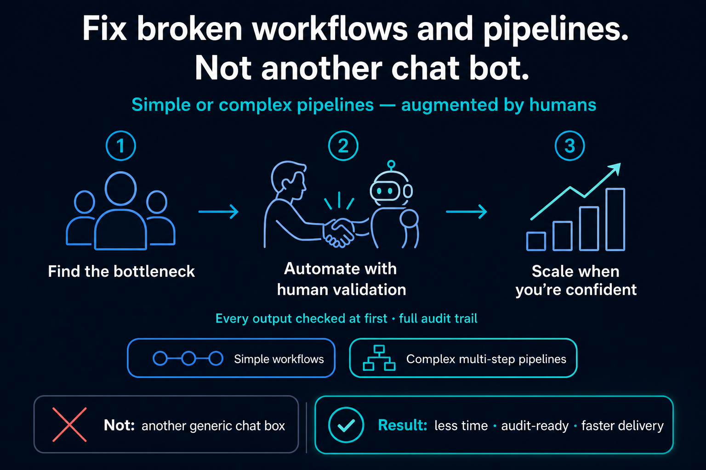

AI Automation for Workflows You Cannot Afford to Get Wrong
For ops, finance, and compliance teams in regulated industries — practical AI with audit-ready workflows. Straight talk: we'll tell you what's worth automating, and what isn't. See what's possible.
27+ years delivering software in regulated environments
First engagements are scoped to a single workflow — no enterprise procurement required.
How We Work
A clear path from first conversation to confident automation — no sales theatre, just an honest look at what's slowing you down.
-
Free Discovery Call
A straight conversation about your bottlenecks and pain points — not a pitch deck. We sign a confidentiality agreement before you share anything sensitive.
-
Start With What Hurts Most
We scope one bottleneck — invoices, parsing, or checks — and deliver a working pipeline in days, not months. See some samples of what's possible.
-
Human Review, Then Scale
Every output is checked by a person first. Automation scales only when you are confident — see our client results.

Built to Fix What's Actually Broken
We pair architectural clarity with hands-on delivery — because your problems deserve working software, not buzzwords.

Over 27 years, I've managed global engineering teams, modernised legacy systems, and led cloud-native migrations on Google Cloud and Microsoft Azure.
No BS — I'm not here to sell AI for the sake of it. I want to understand what's actually hurting your team day to day, and fix it with integrity. If automation isn't the right answer, I'll tell you straight. If it is, I'll build it myself and stay until it works.
// Core focus
- AI workflow automation — document processing, inbox triage, and compliance pipelines with human review built in.
- AI engineering — autonomous coding workflows and development automation to speed up delivery and code review. Example: agentic PR validation pipelines that check structure, tests, and style before a human reviewer opens the diff.
// Background credentials
- Global team leadership — managed five engineering teams across regions; understands how to lead delivery and get complex work right first time.
- Architect & developer — designed and built many complex systems hands-on, from architecture through to production code — not just diagrams and hand-offs.
- Enterprise architecture — moving complex monoliths to secure microservices on GCP and Azure without taking systems offline.
- Operational reporting — bringing data from multiple sources into dashboards that flag issues before audits or inspections.
// How we practice what we preach
Workflows we built and run on our own business — same human-review discipline we deliver for clients.
Where to Start
Three fixed-scope pilots most clients begin with — pick the bottleneck that sounds like yours. We'll scope one workflow on a discovery call; no enterprise procurement required.
Supplier Verification Pilot
- Who it's for
- Quality, compliance, and procurement leads verifying suppliers when websites have no simple data feeds — and when onboarding packs arrive as scanned PDFs or faxes.
- What you get
- Automated website and document collection, AI field extraction from certification forms and compliance PDFs, structured logging to your spreadsheet or system, human review queue, and audit-ready records — typically live in 2–4 weeks.
- Typical outcome
- Manual research and re-keying per supplier cut from hours to minutes; every output human-reviewed until you sign off on full automation.
Smart Inbox Triage Pilot
- Who it's for
- Support and ops leads when urgent messages get lost in a flooded inbox and every reply is written from scratch.
- What you get
- Email intake, urgency and sentiment triage, AI-drafted replies saved to your drafts folder, and exception alerts via Slack, Microsoft Teams, or email.
- Typical outcome
- Urgent messages flagged within minutes; routine enquiries drafted same day. Nothing sends without human approval.
Invoice-to-Record Pilot
- Who it's for
- Finance controllers and AP teams pulling invoice data from email attachments into finance systems by hand.
- What you get
- Document intake, field extraction, validation rules, hand-off to your finance system, and human review on every exception.
- Typical outcome
- Roughly 40 hours per month of manual data entry removed; receipt-to-record time cut by more than half.
Case Studies
Production deployments under confidentiality agreements — specifics we can share on the page; client names and reference calls available under NDA. Each study maps to a pilot playbook above.
Supplier Verification for Regulated Supply Chains
Mid-size EU compliance platform · ~200 supplier onboardings/year · ~30% of packs arrive as scanned PDFs or fax
- Challenge
- Quality staff verified every supplier by hand — website research, then re-typing certification forms and signed attestations from PDFs and faxes into a spreadsheet before records entered the compliance system. A single supplier took 45 minutes on average. During onboarding spikes, records queued for days. External auditors had asked how unaudited data could enter the system.
- Approach
- One scoped workflow, live in 3 weeks: automated website collection where public data exists; document pipeline with confidence scoring — extractions below 85% routed to a human review queue, never into the compliance system; structured hand-off to the client's existing spreadsheet and compliance tool; audit log on every intake (source, fields, reviewer, timestamp, action). Client wanted faster auto-approval at week one — we held 100% human review until they'd processed 50+ records and signed off accuracy themselves.
- Outcome
- First 90 days (~80 suppliers): median handling time 45 min → 7 min; zero records entered without review; 12% of extractions flagged low-confidence, 3 corrected before approval. Client signed off partial automation at week 10.
- Client
- "We stopped re-typing pdf certificates. The review queue is the part our auditors actually cared about — every field has a source." — Head of Supplier Quality, EU regulated supply chain platform
Reference call available under NDA
Customer Support Triage & Draft Replies
B2B SaaS provider · ~400 support emails/week · Team of 4 on a shared Microsoft 365 mailbox
- Challenge
- Urgent and frustrated messages sat in the same queue as routine enquiries — no reliable way to prioritise. Critical issues sometimes waited 24+ hours. Agents averaged 12 minutes drafting each reply from scratch, and tone varied widely across the team.
- Approach
- One scoped workflow, live in 2 weeks: intake from the existing shared mailbox; urgency and sentiment scoring on every message; AI-drafted replies saved to each agent's drafts folder — never sent automatically. Angry or critical messages trigger instant Slack alerts with a link to the thread. Client asked for auto-send on low-risk replies at week two — we kept human approval on every outbound message until they'd reviewed 100+ drafts.
- Outcome
- First 60 days (~1,600 emails): median time to flag urgent messages 4 min (was 24+ hrs); routine enquiries drafted within 2 hrs of arrival; 85% of drafts sent with minor edits only; zero messages sent without human approval.
- Client
- "Urgent tickets surface in Slack before we've even opened Outlook. The team edits drafts instead of staring at blank replies." — Support Operations Lead, B2B SaaS platform
Reference call available under NDA
Invoice & Document Processing
Mid-size manufacturer · ~350 invoices/month · 2 AP clerks · Invoices arrive as email attachments
- Challenge
- AP staff pulled line items, VAT, and PO references from PDF invoices by hand, then keyed them into the finance system. Each invoice took ~15 minutes. The team spent 40+ hours a month on data entry alone, and receipt-to-record averaged 3–5 business days.
- Approach
- One scoped workflow, live in 3 weeks: automated intake from the AP mailbox; field extraction with validation rules (PO match, VAT totals, duplicate detection); clean records handed off to the existing finance system; exceptions routed to a human review queue with Slack alerts. Client wanted all invoices auto-posted at launch — we held exceptions-only review until they'd validated 200+ extractions against source documents.
- Outcome
- First 90 days (~900 invoices): manual data entry 40 hrs/month → 8 hrs/month on exceptions only; receipt-to-record median 3.2 days → 1.1 days; 9% exception rate, all reviewed before posting. Client signed off auto-posting on high-confidence matches at week 11.
- Client
- "We didn't replace our finance system — we stopped being its data-entry department. Exceptions are the only invoices anyone touches now." — Finance Controller, mid-size manufacturing group
Reference call available under NDA
Our Service
Hands-on AI workflow automation — scoped to one bottleneck first, built for teams that need proof before they trust AI.
AI Workflow Automation
Automated workflows with human review built in — document processing, email pipelines, supplier verification, and audit-ready records. We plug into tools your team already uses — Slack, Microsoft Teams, and email by default; WhatsApp or Telegram only where your policy allows.
Book a Discovery Call
A free 30-minute call to understand what's actually slowing you down. We'll confirm by email and sign a confidentiality agreement before you share anything sensitive.
- No pitch deck — just an honest conversation about your pain points
- If AI isn't the right fix, we'll tell you straight
- No production access or sensitive data required upfront
- You leave with a scoped pilot proposal for one workflow
- First engagements are single-workflow pilots — no enterprise procurement required
Success!
Pick an available slot — times are shown in GMT+1. You'll receive a calendar invite by email.
Booking details are stored in Google Calendar and a confirmation is sent via Gmail. We do not sell personal data. See privacy notice below.
Prefer LinkedIn? Connect with Karl Nolan